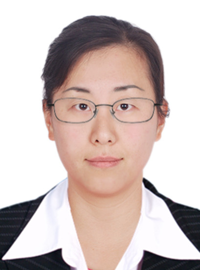

- 电子邮箱：xrwang@buaa.edu.cn
- 所在单位：电子信息工程学院
- 办公地点：新主楼F622
- 学历：博士研究生
个人简介
王向荣，博士、教师，2009年和2011年分别获南京理工大学电子信息工程系学士和硕士学位，2015年获澳大利亚新南威尔士大学电子工程系工学博士学位，2016年在美国维拉诺瓦大学高级通信研究中心从事博士后工作，2016年10月至今在北京航空航天大学任教。近年来已发表论文百余篇，主持国家自然科学基金民航联合重点项目，科技部重点研发计划课题，国家自然科学青年基金项目，国家自然科学基金面上项目，主持工信部无线电频谱监测项目，主持北京市自然科学基金项目和新星交叉项目，核心人员参与国家自然科学基金重大科研仪器研制项目。IEEE高级会员。2016年入选第二届中国科协“青年人才托举工程”，2018年入选北航拔尖人才计划,2022年北京市科技新星，2022年度国家级人才计划青年项目，2022年度欧盟“地平线”杰出人才计划玛丽居里学者，获2023年度IEEE 航空电子系统协会（AESS）Barry Carlton Award，IEEE 航空电子系统协会 Digtinguished Lecturer(2025-2026)。
招生信息
有意申请本课题组硕士、博士的同学请直接发邮件至 xrwang@buaa.edu.cn。
教育经历
- 2011.7 - 2015.7: University of New South Wales | 信息与通信工程 | 博士学位
- 2009.7 - 2011.7: 南京理工大学 | 信息与通信工程 | 硕士学位
- 2005.9 - 2009.7: 南京理工大学 | 信息与通信工程 | 学士学位
工作经历
- 2016.10 - 至今: 北京航空航天大学 | 电子信息工程学院 | 教师
- 2016.2 - 2016.8: 美国维拉诺瓦大学 | 博士后
- 2015.10 - 2015.12: 澳大利亚新南威尔士大学 | 博士后
社会兼职
- Committee Member of IEEE SAM TC
- Member of IEEE Signal Processing Education Center Editorial Board
- Associate Editor of IEEE Transactions on Radar Systems
- Associate Editor of Elsevier Digital Signal Processing
团队成员 (Team Members)
团队名称：空管信号处理团队。团队采用个性化培养风格，针对每位同学的特点和优点，制定培养方案，让每位同学成长为最好的自己。
博士研究生：
修苌, 程硕, 唐妮娜, 翟唯童, Shahid Hassan, Saima Ishtiaq
硕士研究生：
张恒毅, 于硕同, 张昌盛, 刘恒峰, 吴啸宇, 吴焜, 黄嘉怡, 李畅, 张鑫, 龙倩, 王鹏程
已毕业学生 (Alumni)：
张旋, 徐菁, 马雅楠